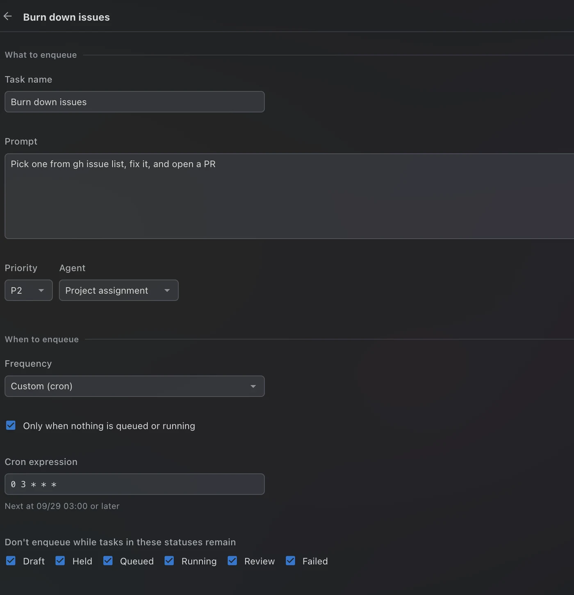
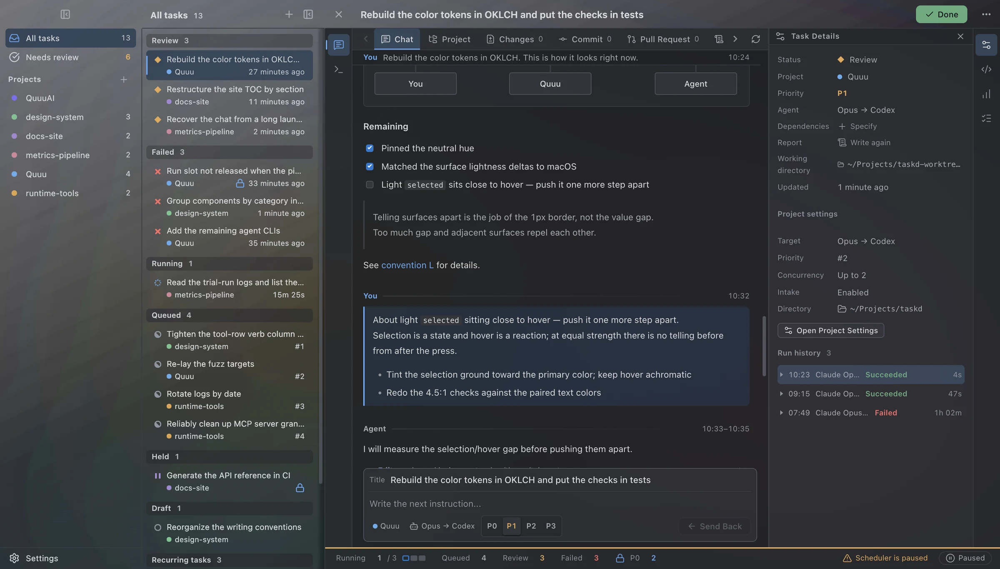
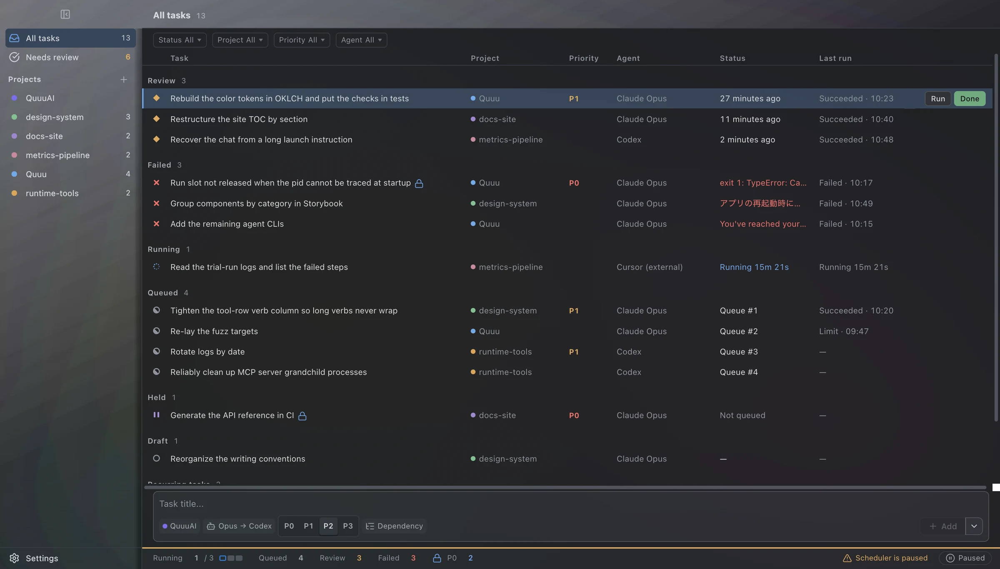
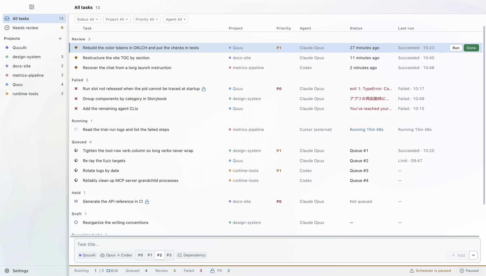

Automation
Queue work while you sleep.
“At 3:00, when nothing is queued, burn down one issue.” A cron time is a deadline, not an alarm — a busy night never skips the day.

Quuu for macOS
One Mac workspace for Claude Code, Codex, Cursor and more. Write the work down, queue it across every project, and step away — the queue keeps running while you're gone.

Why it exists
He keeps a dozen-odd projects. His days went to handing what he had written in a notepad to whichever AI was free. No rest — all of it so the AIs would keep running at peak efficiency.
Quuu takes the handing-off. You take the day back.
One day of the queue
08:40
Last night's notes become tasks. A title, a project, a priority — nothing else to decide.
Across every project, in priority order. Dependencies wait for what they depend on.
Concurrency per project and per agent. Everything else waits its turn.
Quuu reads the reset time straight from the CLI and continues the same session on the next agent.
Finished work lands in Review. Nothing is marked done behind your back.
Read the conversation, the changes, the pull request. Send it back, or press Done.
Neither the scheduler, the agents, nor the error handlers ever write it. That button is yours.
An agent's best day ends in Review. Everything after that is yours.
Agents
Claude Code, Codex, Cursor, Grok, GitHub Copilot, Antigravity and opencode. When one hits its limit, Quuu cools it for exactly as long as the CLI said — and hands the same session to the next.
| Name | Command | Slots | Fallback | Status | |
|---|---|---|---|---|---|
| Claude Opus | claude | 0/2 | Codex | Idle | |
| Codex | codex | 0/1 | — | Idle | |
| Cursor | cursor-agent | 0/1 | Opus | Idle | |
| Grok | grok | 0/1 | Codex | Idle | |
| GitHub Copilot | copilot | 0/1 | — | Idle | |
| Antigravity | agy | 0/1 | — | Idle | |
| opencode | opencode | 0/1 | — | Idle |
| Name | Members | Strategy | |
|---|---|---|---|
| Opus → Codex · Default | 2 | First free slot in defined order |
Restarts are routine
Agents run detached, write straight to disk and record their exit code even while Quuu is gone. On launch it re-adopts what's still running and settles what finished.
Appearance
Surfaces sampled from macOS itself. One neutral hue, perceptually even steps, every text color checked at 4.5:1. Move the lens.


Built for being away
Automation
“At 3:00, when nothing is queued, burn down one issue.” A cron time is a deadline, not an alarm — a busy night never skips the day.

Priority
Iterating on one big task? P0 pins the project and agent slot to it until you mark it done.
Pull requests
Failed checks, stuck checks and conflicts go back to the same agent with your prompt, {{url}} and all.
Change reports
Which concept became which, which rule now says something else — written a level above the code, one page per task.
CLI & MCP
$ quuu tasks list --project . $ quuu tasks logs 7f3a --search failed $ quuu describe rules.create
Session import
Sessions you launched by hand show up as tasks. Pick one up again, still interactive.
A day with Quuu
08:40
Queue it before coffee.
iPhone
Read what came back, mark it done, or queue what just came to mind. Everything passes through one iCloud Drive folder where every file has exactly one writer — nothing silently overwrites anything.
A note, honestly
Quuu is built by kinzal, for kinzal — one person's tool, shared as-is. Pull requests aren't accepted, and issues get fixed when they bite him too. If that suits you, it's MIT and it's yours.
Apple Silicon or Intel · at least one agent CLI installed and signed in · MIT